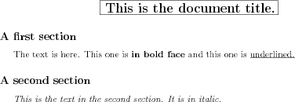

Navigation
Introduction
Fex is a simple language based on Forth and with a syntax near txt2tags to generate LaTeX file and produce the associated ps or pdf files. Fex is a gforth script. It comes with an emacs mode.
A simple example
Here is a simple document example (colored version):
document( title: This is the document title. section: A first section The text is here. This one is *( in bold face )* and this one is _( underlined. )_ section: A second section /( This is the text in the second section. It is in italic. )/ )document
Important note: Fex is a Forth sublanguage. So each commands like title:,
*(, )/ ... are Forth words.
They need to be separated by spaces.
$ fex simple.fex
And the result looks like this:

Other examples
A full example can be found in English here or in French here.
Fex can be interactive (like Forth). Here are the available commands from the prompt line:
bye, make-dvi, make-ps, view-ps, pdf, make-pdf, view-pdf, save-ps, save-pdf, clean, clean-all, print
You can type 'help' or 'usage' at prompt time to have more actions details.
Downloads
Sources: fex-2.tar.gz
Installation
Extract the tar.gz archive somewhere:
$ tar xzvf fex-N.tar.gz
And copy the fex file somewhere in your $PATH. For example, as root:
cp fex /usr/local/bin
Or if you want an English version:
cp fex-en /usr/local/bin/fex
To build a document you'll need to have gforth, latex, dvips, gv, xpdf and lpr installed on your system.
Customisation
Fex is simple to extend. For example, you can change the pdf viewer with a change in the 'pdf' word (one line).
You can also add your own commands to fex. See the section near the end of the file where commands words are defined. A new command is auto documented directly in the word command.
Indeed a new command can be added at the begining of the document file.
Contact
You can reach me by mail at hocwp@free.fr.
Have fun!